JS Checkout is the payment window that Paytm Payment Gateway merchants embed on their websites. I redesigned it from one narrow column into a three-zone window that opens on the fastest way to pay, shows the full price before the pay button, and gives every failure a way back. It shipped with a measured 3% increase in success rate.
JS Checkout, the payment window in Paytm Payment Gateway
Platform
Desktop web. Checkout frames at 1440 × 1024, result pages at 1392 × 816
Scope
The checkout window, offers, fees, subscriptions, UPI, cards, net banking, error states and result pages
Target
A clear increase of 3% in success rate (SR)
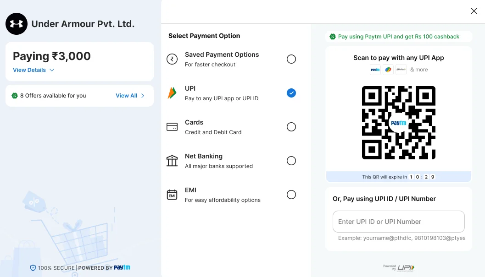
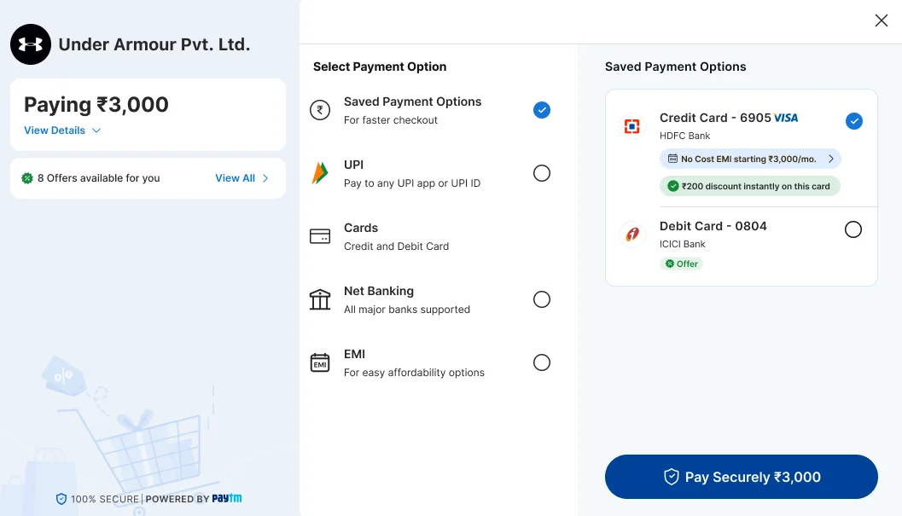
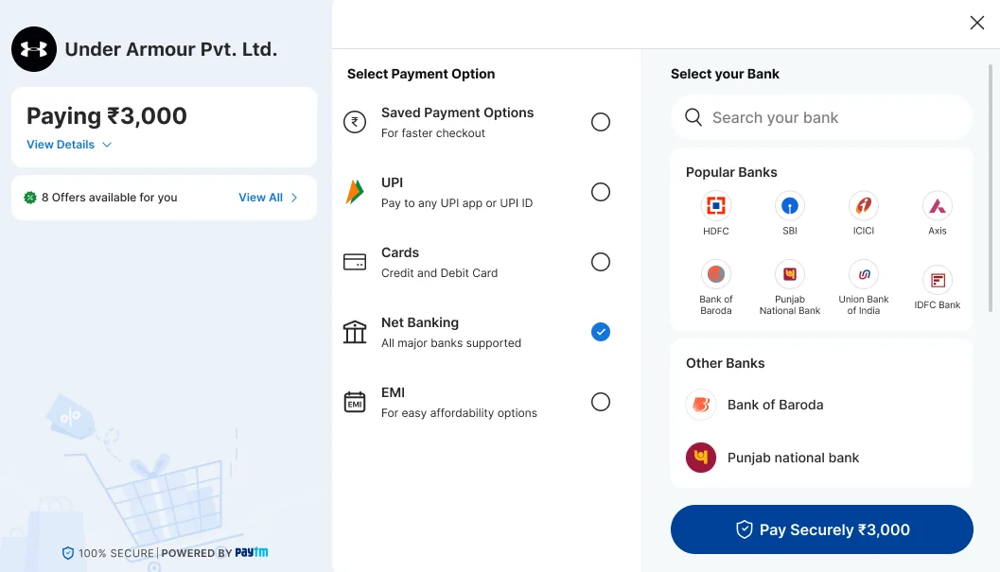
In short
The problem
A failed payment costs the merchant a sale and the customer a bad moment. The old window was a single column. In the screen I started from there were no offers, no fee breakdown, no QR timer and no recurring-payment end date.
The solution
Three zones: order and offers on the left, every way to pay in the middle, and the chosen method on the right. UPI and its QR are open at first glance. Fees, offers and subscription terms show before the pay button. Each failure has a plain reason and a way on.
My role
I led the UX research and design: the audit of the old window, the layout, the screens, and the states for waiting, failure and recovery.
Design brief
Merchants embed JS Checkout so customers can pay without leaving their site. The revamp was set one measure, success rate. So the brief was narrow: get more first attempts to succeed, without adding steps and without hiding anything a customer needs to decide.
Objective
Raise success rate by a clear 3%. Get customers to the right method fast, remove surprises before they pay, and help them recover when a payment does not go through.
Users
Customers paying on a merchant’s website from a desktop, by UPI, card, net banking or EMI
Customers setting up a subscription or a one-time mandate
Merchants, who embed the window and are judged on how many payments complete
Constraints
The window opens over the merchant’s page, so it has to feel safe and stay in one modal
Each method needs different room: a QR, a UPI ID, a card form, a bank list
Fees, offers and mandate terms vary by merchant and by method, and have to be shown once they are known
Rules for recurring payments require the customer to see what they are agreeing to6
Banks, UPI apps and networks decide the outcome of many failures, so design cannot remove them
Success measures
Success rate (SR), with a target of a clear 3% increase. Guardrails: time to pay, the pending rate, and support contacts about failed or pending payments.
Problem statement
A customer who has already decided to buy meets a payment window that makes them work out how to pay, what it will cost and what they are agreeing to. Each moment of doubt is a chance for the payment to be abandoned, mistyped or failed. The merchant sees all of it as a lower success rate.
How might we…
show the fastest way to pay before the customer has to look for it?
make the full cost, and any recurring terms, clear before the pay button?
bring offers into the decision without slowing it down?
stop the failures that come from stalling, such as an expired QR or an unaccepted request?
give every failure a plain reason and a way back?
What the research says
This study rests on three things: an audit of the old window, published research on checkout and payments, and the public rules for UPI and recurring payments. The gateway’s own funnel and failure-code data would sharpen it. Where I describe why payments fail, I call it a working model, not a measured share.
Audit of the old window
I reviewed the previous JS Checkout screen, a subscription set-up for ₹1, against four of Nielsen Norman Group’s usability heuristics: visibility of system status, error prevention, recognition rather than recall, and help recovering from errors.89
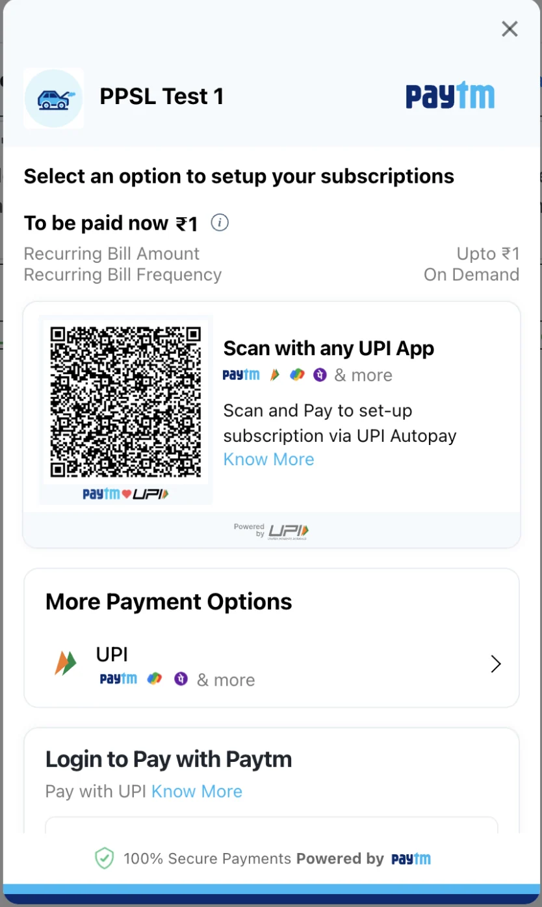
BeforeThe previous single-column window.
UPI appears twice
The QR card says “Scan with any UPI App”. Below it, “More Payment Options” opens a second UPI entry with the same app logos. The customer has to decide between two routes to one method before paying. Revamp: one UPI entry holds the QR and the UPI ID together.
Recurring terms without an end
The window shows “To be paid now ₹1”, a recurring amount of “Upto ₹1” and an “On Demand” frequency. It does not say how long the mandate lasts. Recurring-payment rules ask for a stated validity and, for variable amounts, a maximum.6Revamp: a Subscription details block adds validity and a note that the actual amount may vary.
A QR with no visible time limit
The QR card shows no timer. A customer who scans a QR that has quietly expired fails and cannot tell why, which is the visibility-of-status problem.8Revamp: a countdown, then a Refresh QR button.
One amount, no breakdown, no offers
The window shows a single figure. There is no entry for offers and no breakdown of fees or discounts. Extra costs are the most common reason shoppers give for abandoning a checkout.1Revamp: a View Details breakdown, an offers strip and a fee explainer.
Everything in one scrolling column
Amount, terms, QR, more options and a Paytm login are stacked, and “Login to Pay with Paytm” is cut off at the foot of the window. The customer cannot see the QR and the other methods together. Revamp: three zones show the order, every method and the chosen method at once.
Why people abandon a checkout
40%
Gave “extra costs too high (shipping, tax, fees)” as a reason. The most common one.
These are shares of US shoppers who abandoned, after leaving out those who were only browsing. The page gives no sample size. I use it as a guide to what matters, not as a measure of India.
How India pays, and what the rules ask
85.5%
UPI’s share of India’s payment volume in the second half of 2025.
RBI Payment Systems Report, as reported by Outlook Money, May 20263
Feb 2026
A payment gateway, Cashfree, blocked UPI Collect for merchant payments on Android and desktop, following an NPCI phase-out. UPI Intent on mobile and UPI QR on desktop replace it.
Notice banks must give before each recurring debit, naming the merchant, the amount and the date.
RBI e-mandate rules, reported by Business Today, April 20266
The same rules say every e-mandate must state its validity period, and variable payments must have a maximum limit.6 Gateways describe the same fields: a maximum amount, a frequency, and start and end dates.7 Press reports in March 2025 said NPCI planned to phase out collect requests for merchant payments to curb fraud.5
Where a payment can fail: my working model
Built from the payment flow, not from data. The gateway’s failure codes would replace it with measured shares.
Stage
What goes wrong
Who controls it
Design lever
Before paying
The customer cannot find their method, meets a cost they did not expect, or does not trust the window
Design
Every method visible, a fee and discount breakdown, trust cues
Entering details
A mistyped card or UPI ID, or an offer that does not apply to the card entered
Design
Saved instruments first, offer notices beside the field
Approving
The QR has expired, the request is not accepted in the UPI app in time, or the window is closed
Shared
A QR timer and refresh, a request screen with a countdown and Cancel, a processing screen that says not to close
The bank decides
Insufficient balance, a limit reached, or a method the merchant cannot accept
Mostly the bank. Design can soften it
Unavailable methods flagged up front, a plain failure reason, Try Again
After the attempt
The status is unclear, so the customer leaves or pays twice
Shared
A pending page and a failure page that show the order ID and the status
What I took from it
Open on the likely method, and show it working
UPI carries most of India’s payment volume,3 and Baymard advises preselecting the most common method for the market and showing its fields.2 So UPI is preselected and its QR is already on screen. The old window had the same instinct, and I kept it.
Nothing about cost should first appear at the pay button
Extra costs and an unseen total are two of the top reasons for abandoning.1 Baymard asks for the final total, including fees, before payment details.2 So the amount card comes first and carries a breakdown.
Say what each choice is
Recognition beats recall.8 Each method gets a line that says what it is for, and each offer sits beside the instrument it belongs to.
Clarity builds trust more than badges
Baymard finds trust comes mainly from clear next steps and no hidden costs or late conditions.2 The window explains itself in plain words and keeps the trust marks small.
Make waiting and failure legible
Timers, status text, a plain reason and a way back come from two heuristics: visibility of system status, and help recovering from errors.8
Build around the QR, not around collect
The direction of UPI rules favours QR and intent over collect on merchant payments.45 On desktop, the QR is the path to make strong. The UPI ID field stays as a second route.
Who it is for
These three segments are hypotheses built from the audit and the research above. I would confirm them in interviews. Merchants are covered in the brief.
Desktop shopper paying by UPI
Wants
To pay with the phone in their hand, in seconds.
Worries about
A QR that has expired, or a request they miss.
The window gives them
UPI open at first glance, a QR with a timer, and a UPI ID field as a second route.
Customer paying by card or net banking
Wants
The discount they were promised, on the instrument they use.
Worries about
Typing details and then finding the offer does not apply.
The window gives them
Saved cards first, offers beside each instrument, and a notice when a card does not qualify.
Customer setting up a subscription
Wants
To know what will be charged, when, and for how long.
Worries about
An open-ended debit.
The window gives them
Subscription details with frequency, a recurring maximum and validity, and a note that a one-time mandate debits nothing now.
Information architecture
The old window was one list. The new one has three zones, and the middle one drives the right one. Choose a method in the middle and its detail opens beside it, with no page change, so the order and the total stay in view.
The window, annotated
12345
1Order and amountMerchant, the amount to pay, and View Details for the breakdown.
2Offers“8 Offers available for you”, with View All.
3Ways to payFive methods, each with a line that says what it is.
4The chosen methodFor UPI, the QR with its timer, and a UPI ID field below it.
5Trust“100% secure, powered by Paytm”, always in view.
Customer opens JS Checkout
Order and offers
MerchantName, logo, one-line description
AmountInclusive of any fee, with View Details
OffersStrip, and an All offers sheet
Safety tipDismissible
Ways to pay
Saved payment optionsFor faster checkout
UPI
Cards
Net banking
EMI
NoticesMerchant limit, account check
The chosen method
UPIQR, timer, UPI ID or number
CardsSaved cards, or a new card with EMI and save-card consent
Net bankingSearch, popular banks, other banks
Pay Securely button
After paying
Processing“Do not close this window”
Failed or timed outReason, Try Again or Retry
Result pageSuccess, pending or failure, with the order ID
Worked out for the customer, never asked: which methods this merchant can accept, which offers fit the chosen instrument, and whether a fee applies.
What the right panel shows for each method
Method
What the panel shows
States designed
Saved payment options
Saved cards with bank, last four digits, and offer and No Cost EMI tags
Instant discount line, EMI eligibility
UPI
QR with app logos and an expiry timer, a UPI ID or number field, an offer line
Card number, expiry and CVV, an EMI line, a save-card consent line
Offer applied, offer not applicable
Net banking
Bank search, a popular banks grid, other banks
Cashback tag on a bank, cashback applied
Design principles
Show the likely path open
UPI and its QR are visible without a click.
Price before pay
Nothing about cost appears for the first time at the pay button.
Say it where the decision is
Offers and fees sit next to the instrument they affect.
Every wait and failure has words and a way on
A timer, a status, a reason and a retry.
Journey map
The map follows a desktop shopper paying by UPI QR, the most common path, through six steps. It is built from the flow and the research. The feelings are hypotheses to test, not measurements.
Swipe sideways to see all six steps.
Row
Step 1Arrive
Step 2Check the order
Step 3Choose how to pay
Step 4Pay
Step 5Wait
Step 6See the result
Goal
Know who I am paying and that it is safe
Know the full price
Find my method
Finish in seconds
Know it is working
Know it worked, or what to do next
What they do
Read the merchant name and the amount
Open View Details, glance at the offers
See UPI already open, or tap Cards, Net Banking or a saved card
Scan the QR, or type a UPI ID, or enter a card
Wait, and keep the window open
Read the status, retry or go back to the merchant
Screens
Landing, safety tip
Amount details, All offers, Offer applied
Landing, saved cards, net banking, new card
QR, UPI ID, card form, request waiting
Processing
Success, pending, failure, failed, timed out
How they feel
Solid green line: the payment succeedsDashed red line: the payment fails
Risks
Doubt about who is being paid
A fee or a missing discount found at the last step
Choosing a method that cannot be used, or that does not carry the offer
An expired QR, a missed request, mistyped details
Closing the window, or paying twice
A failure with no reason and no way back
Design response
Merchant name and description, a safety tip, a secure footer
A breakdown with fee and discount, an offers strip, “Offer applied”
One list with a line under each method, flags for unavailable methods, offer notices
A QR timer and Refresh QR, a request screen with countdown and Cancel
“Please do not close this window or press back”
A plain reason and Try Again, and the order ID on result pages
How I would measure it
Window open to first interaction
View Details opens, offer apply rate
Method mix, method switches
QR scan to success, refresh and timeout rates
Processing time, drop-off while processing
Retry rate, retry success, support contacts
The design
The flow, screen by screen
A selection of screens from the file, in the order a customer meets them. Scroll sideways, or click a screen to enlarge it.
LandingUPI open, QR on screen, eight offers one tap away.
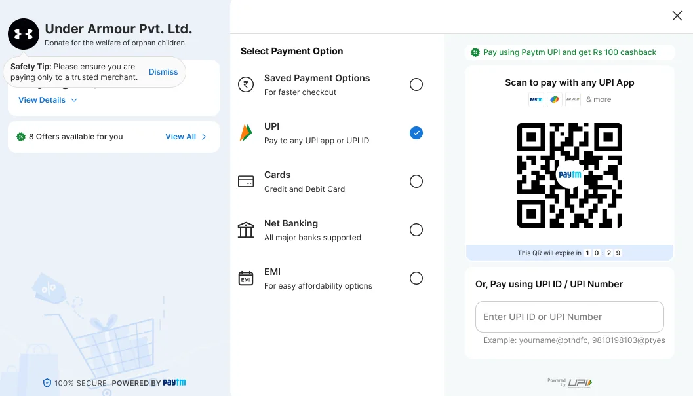
Safety tipA trusted-merchant reminder, and the merchant’s one-line description.
One-time mandate“Blocking ₹3,000”, and nothing debited now.Checkout for linksThe same window, with no merchant page behind it.
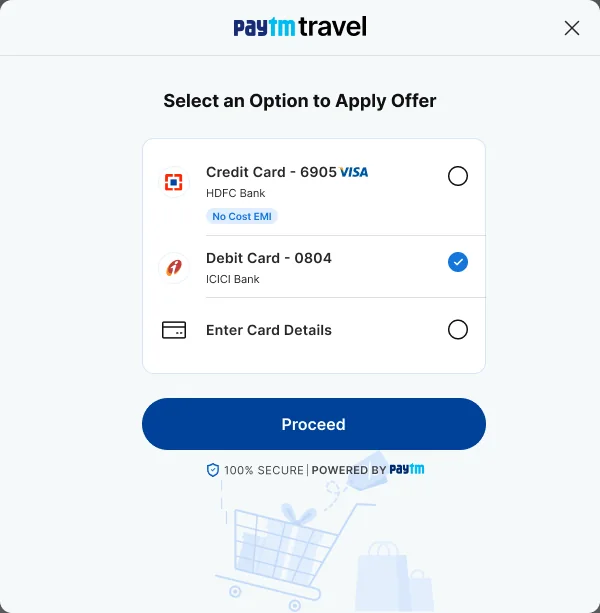
Offer-led entryThe offer was picked on the merchant page. Now the instrument.
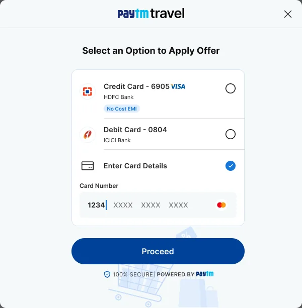
Offer-led, cardOnly the card number is asked, to check the offer.
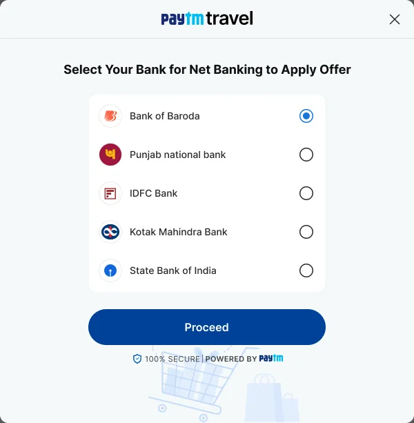
Offer-led, net bankingChoose the bank the offer needs.
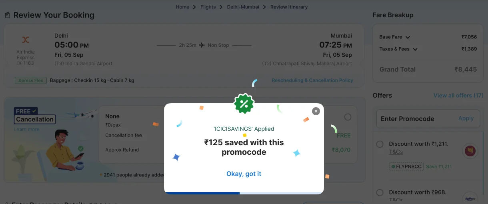
Offer appliedConfirmed on the merchant page: “₹125 saved with this promocode”.
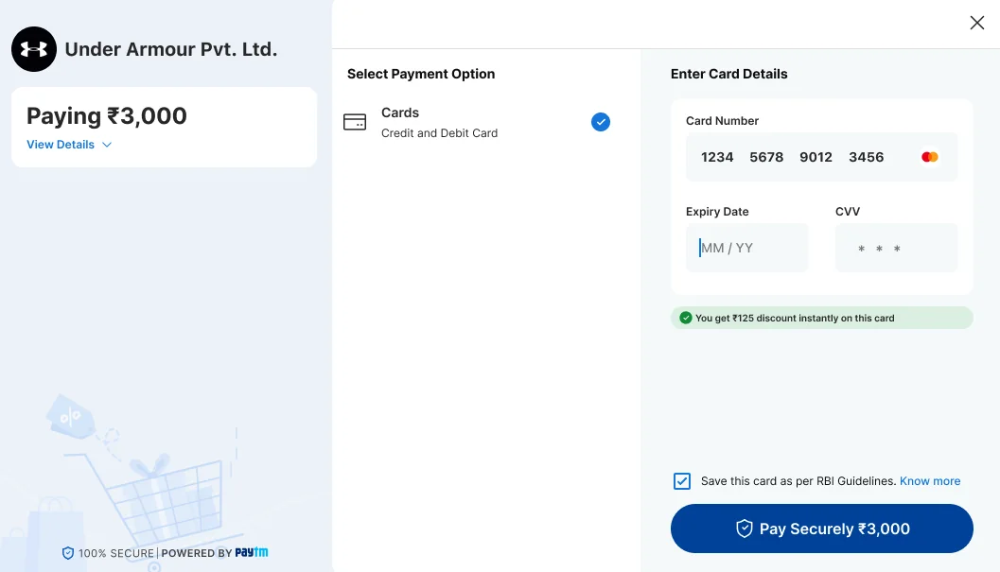
Back in the windowCards preselected, card filled, discount shown.
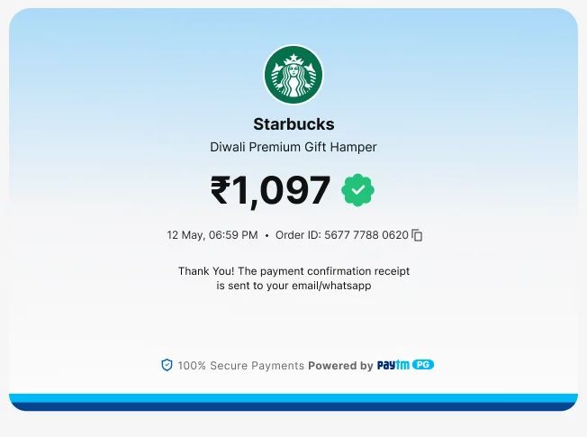
SuccessAmount, date, order ID, and where the receipt goes.
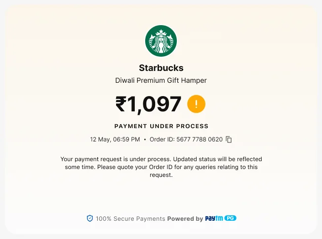
Pending“Payment under process”, with the order ID to quote.
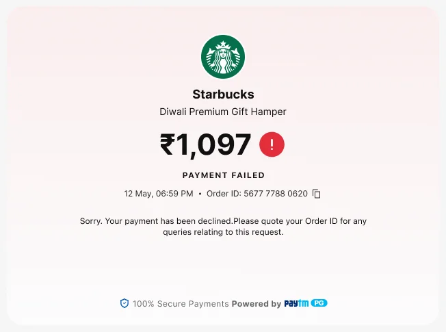
Failure“Payment failed”, with the order ID to quote.
Eight decisions
1. Keep the QR, and put everything else around it
Why. The old window led with the QR, and that was right. UPI carries most of India’s payment volume,3 and Baymard advises preselecting the most common method.2 I kept that and gave it context. UPI is preselected, the QR and a UPI ID field share one panel, an offer line sits above the QR, and the QR shows a countdown.
Trade-off. The window is wider, so it needs more room on screen. The file does not show a narrow-screen version. See review finding 2.
BeforeAfter
2. Show every way to pay, and say what each one is
Why. Five methods sit in one list, each with a line under it: “For faster checkout”, “Pay to any UPI app or UPI ID”, “Credit and Debit Card”, “All major banks supported”, “For easy affordability options”. Customers recognise their method instead of recalling where it was.8 Saved payment options come first, for returning customers. Choosing a method changes only the right panel, so the order stays in view.
Trade-off. Five rows with descriptions take more room than icons alone, and the list grows if methods are added.
3. Price it honestly before the pay button
Why. Among US shoppers who abandon, 40% cite extra costs and 12% could not see the total up front.1 The amount card is the first thing under the merchant name, and View Details opens a breakdown: total, platform fee, convenience fee, discount, amount to pay. When a fee applies, the headline reads “Paying ₹3,003.56” with “Inclusive fee of ₹3.56”. Where the fee depends on the instrument, the QR says “Fee might be applied. Know more” instead of saying nothing.
Trade-off. A fee shown early may put some customers off. A surprise at the pay button is worse, but the merchant should know it is a trade.
4. Put offers where the choice is made
Why. An offer changes which instrument a customer picks, so it shows in three places. A strip under the amount says “8 Offers available for you”, with View All. Tags sit on the instrument they belong to: a Cashback tag on a bank, a discount line on a saved card. A short confirmation says “Offer applied” when one is used. If the card entered does not qualify, the form says so before the customer pays.
Trade-off. Offers compete with the pay button for attention. The full list is one tap away on its own sheet, so it does not crowd the main path.
5. Let an offer start the payment
Why. A customer who picks an offer on the merchant’s page has already chosen the instrument. The window asks only for what proves it, the bank or the card number. Then it opens with that instrument selected and the discount shown: “You get ₹125 discount instantly on this card”. Nothing is asked twice.
Trade-off. In this mode the window lists only the offer’s method, and the frames show no way to switch. A customer who changes their mind goes back to the merchant’s page.
6. Say what a subscription will do
Why. Recurring-payment rules ask for a stated validity and a maximum for variable amounts.6 The Subscription details block gives the amount to pay now, the frequency, the recurring amount (“Upto ₹50”), the validity (28 Oct ’25 to 28 Oct ’50) and a note that the actual amount may vary. For a one-time mandate, the window says “Blocking ₹3,000” and “This will only block the amount in your bank account, no debit will happen right now.”
Trade-off. More text in the left panel. The terms sit behind a link, so a customer who only wants to pay does not scroll past them.
7. Earn trust with clarity, not badges
Why. Baymard finds trust comes mainly from clarity and predictability, and less from badges.2 The left panel carries the merchant’s name and a one-line description, a dismissible tip (“Please ensure you are paying only to a trusted merchant”) and a plain “100% secure, powered by Paytm” footer. The card form says why it saves a card: “Save this card as per RBI Guidelines”, with Know more.
Trade-off. The safety tip takes space at the top of the panel until it is dismissed.
8. Design the wait and the failure
Why. The failures design can reduce are the ones where the customer stalls. The QR has a countdown, and a Refresh QR button once it expires. A UPI ID request says “Open your UPI app on mobile and accept the payment request”, names the UPI ID it went to, and shows a countdown with Cancel Payment. Processing says not to close the window. If UPI is unavailable for the merchant, it is greyed out with the reason, instead of failing after the customer tries. If a payment fails, the reason is in plain words and Try Again keeps the customer in the window.8
Trade-off. A countdown adds a little pressure. And the file shows a specific reason for one failure, insufficient balance. Each bank response needs its own plain message.
States in the file, and states still to design
The file covers the main path and the common edge cases. I list both so the gap is plain.
Shown in the frames
QR timer and expired QR
UPI request waiting, with Cancel
Processing
Failed with a reason, session timeout
Merchant limit reached
Account check notice
Fee applicable, by instrument
Offer applied, offer not applicable
Subscription and one-time mandate
Offer-led entry
Success, pending and failure pages
Not in the frames I reviewed
A mistyped card number, expiry, CVV or UPI ID
The hand-off to a bank page or an OTP step
A narrow-screen layout
Keyboard and screen-reader behaviour
Languages other than English
A pending payment that later resolves
Measuring it
The result
A 3% increase in success rate, measured against the previous design. Success rate is defined as successful payments divided by payment attempts, counted consistently across both periods.
How I would test it
Run the new window against the old one on a share of the same merchants’ traffic over the same period, so seasonal and merchant-mix effects cancel out. Segment by method, merchant category and returning customers. Run it long enough to detect a 3% change at the baseline volume, with the sample size worked out from the baseline success rate.
Usability tests
Moderated sessions with five to eight people per segment, on desktop. Tasks:
Pay with a UPI QR, using a phone.
Pay with a UPI ID, and recover from a request you missed.
Pay with a card that does not qualify for the offer, then change card.
Find out what the convenience fee is and what you will pay in total.
Set up a subscription, and say what will be charged and for how long.
After a failed payment, try again with another method.
I would record whether each task is finished without help, time on task, where people hesitate, and what they believe will happen to their money.
Sources
Pages read in October 2026. Press reports and gateway documentation are secondary sources, not primary rules.
4Cashfree documentation: UPI Collect changesGateway documentation. Describes an NPCI-mandated phased deprecation of UPI Collect for merchant payments, blocked on Android and desktop from 28 Feb 2026, with UPI Intent and UPI QR as replacements. Exempt categories include mandates and iOS.